Overview
RasterVector is a desktop app (openFrameworks / C++) that converts a raster image into vector line art, using one of 23 procedural drawing algorithms — from simple scanline patterns to curvature-following engraving lines, low-poly triangulation, and gap-free flow-guided fills. The result is a set of paths, not pixels, so it can be sent straight to a plotter, a laser, or a CNC, or dropped into a print layout as clean vector work.
It was built around the Bantam Tools Watercolor Bot, so export, palette handling, and physical scaling (a true 22×30″ sheet) are tuned for that workflow, but the SVG / GCode / EPS output works with any pen plotter or vector pipeline.
What's new
RasterVector has moved fast since it was first documented. Most recent first:
- Paint Recipes panel — a new Paint toolbar toggle shows a real, physical paint-mixing recipe for each of the 8 palette colors: which paints to combine, in what proportion, with gram amounts and a match-quality readout. Same idea as the companion tool paintMixer, built directly into the palette workflow.
- Gradient Hatch reworked — now supports several region-tiling modes (uniform grid, adaptive quadtree, "Mondrian" random splits, jittered grid) instead of one fixed layout, plus a raster cell mode that shows the actual source photo through selected cells instead of drawing hatch lines.
- Palette "Img" mode — any individual palette color can now be set to show the source photo's actual pixels in its region instead of vector strokes, in both the live view and PNG/batch export. Works with any drawing type, independent of Gradient Hatch's raster-cell mode above.
- Two new engraving-style types — Curvature Lines and Calligraphic, tracing the image's principal curvature and a flow-following "flat nib," respectively.
- Two new low-poly types — Triangulation and Tri Edge, replacing an earlier, less capable sparse-patch-based hatch type.
- Newest and most experimental: Flow Fill and Flow Grid — a flow-guided strand fill that claims every pixel exactly once (no gaps or overlaps by construction) and a cheaper straight-hatch grid variant of the same idea.
- Export accuracy pass — SVG export now writes strokes in true on-screen drawing order and automatically saves a companion Bantam Tools JSON file alongside every SVG. PNG export was reworked to match the vector output exactly (white background, antialiased, no preview softening) rather than the live on-screen preview.
- Physical scale changed — drawings now scale to a true 22×30″ sheet (25.4mm/in — canvas units are real millimeters, the same unit brush width, stroke spacing, and stroke length are all measured in), replacing the old 9×12″ at 320 DPI target.
- Presets now save everything — save/load (K / L) now includes palette colors, per-color enabled state, and display settings, not just the active algorithm's parameters.
Workflow
Load
Drop in an image, or load an existing SVG to keep editing a vector drawing already in progress.
Choose a type
Pick one of 23 drawing algorithms — spiral, hatch, streamlines, edge contours, stippling, triangulation, curvature lines, and more.
Regenerate
Generate the line drawing from the current image and parameters. Runs async — stop mid-generation, tweak, and re-run.
Post-process
Fill shapes, scale to physical size, add brush outlines, thin dense strokes, simplify and clean up paths.
Export
SVG, GCode, PNG, or batch export all four (plus EPS) in one go — only the palette colors you've left enabled are included.
Drawing types
Twenty-three procedural approaches to turning an image into lines. Four are composite types that run two algorithms into the same drawing (e.g. sketch strokes plus flow lines on top). Streamline, edge, and flow types read an edge tangent field (Sobel or ETF) to follow the grain of the image rather than a fixed grid.
| # | Type | What it does |
|---|---|---|
| 0 | Spiral | One continuous spiral from a center point; slows and thickens through darker areas |
| 1 | H lines | Horizontal scanlines, wobble increases with darkness |
| 2 | V lines | Same as H lines, scanned vertically |
| 3 | Sketch Aligned | Short strokes seeking the darkest remaining area, then aligned with their neighbors for continuous-feeling flow |
| 4 | Streamlines | Long curved lines running parallel to image edges |
| 5 | Sketch+Flow | Combo: Sketch strokes, then Streamlines on top |
| 6 | Edge | Open contour lines traced along edges only — no fill |
| 7 | Outline+Fill | Combo: Edge contours, then Streamlines fill |
| 8 | Sketch+Edge | Combo: Sketch underneath, Edge contours on top |
| 9 | Isophotes | Equal-luminance contours — like a topographic map |
| 10 | Stippling | Dot density proportional to darkness, colored from the source |
| 11 | Stippling+Edge | Combo: Edge contours, then Stippling |
| 12 | Sketch Curves | Sketch's darkest-area seeking, but drawing long traced curves instead of short strokes |
| 13 | Sparse Patch | Adaptive quadtree of filled/hatched rectangles, with an experimental boundary-tracing "paper" mode. Hidden from the dropdown in the current build. |
| 14 | Sparse Patch Diag | Same quadtree, one diagonal stroke per cell |
| 15 | Sparse Patch BD | Leaner reimplementation of the same diagonal-per-cell idea |
| 16 | Gradient Hatch | Region hatching with spacing/angle following local brightness and structure; several tiling modes, optional raster-cell passthrough |
| 17 | Triangulation | Low-poly Delaunay triangulation, per-triangle outline and/or brightness-driven hatch fill |
| 18 | Tri Edge | Same triangulation rendering, seeded along detected edges instead of uniformly |
| 19 | Curvature Lines | Traces the image's principal curvature directions — wraps around forms like classical engraving cross-hatch |
| 20 | Calligraphic | Flow-following spine paths with luminance-modulated parallel offsets — a flat calligraphy nib |
| 21 | Flow Fill | Flow-guided strand fill; every foreground pixel claimed by exactly one stroke, no gaps or overlaps |
| 22 | Flow Grid | Same color abstraction as Flow Fill, rendered as flow-angled straight hatch per grid cell |
Edges only, no fill: use type 6 (Edge) on its own.
Examples
All of the examples below are the same source image, run through RasterVector's own splash/poster art at default-ish settings for each type — no cherry-picked photos, just one image through fourteen different algorithms. Click any image to view it larger.
The source image every example on this page was generated from — RasterVector's own splash art, run back through itself.
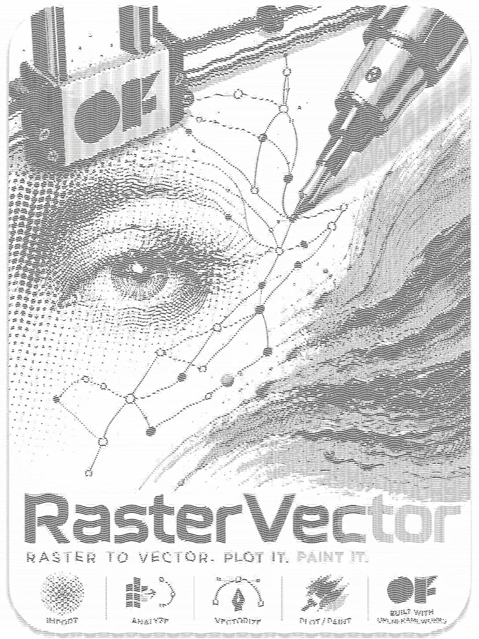
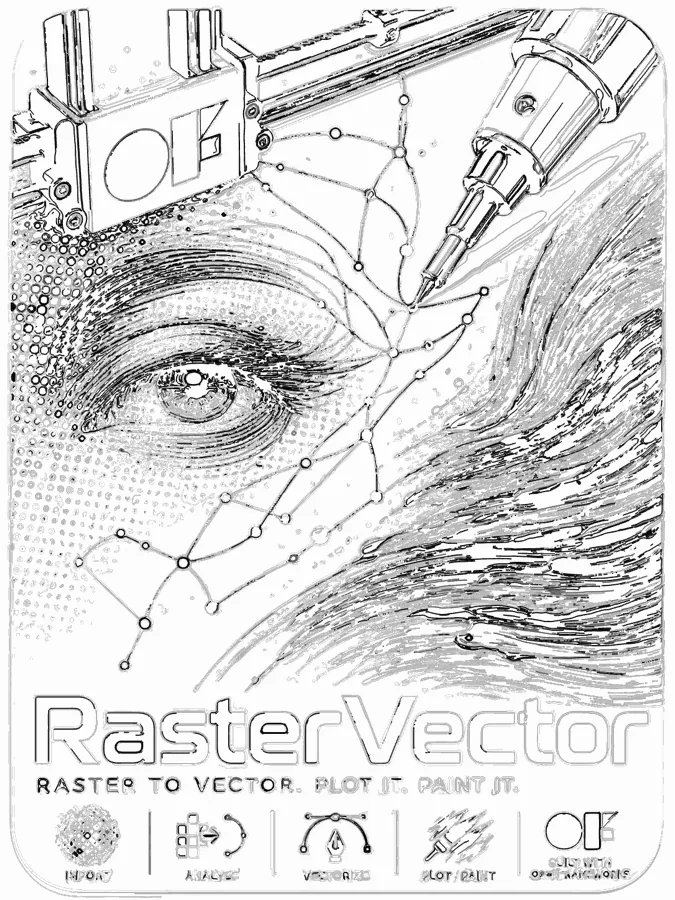
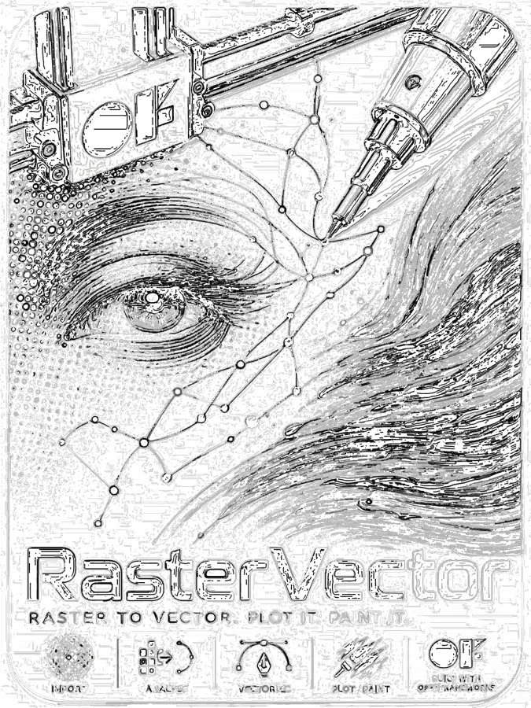
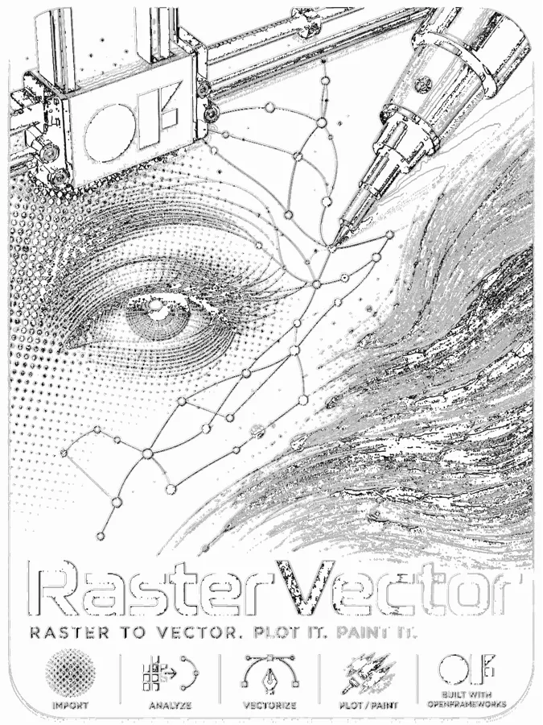
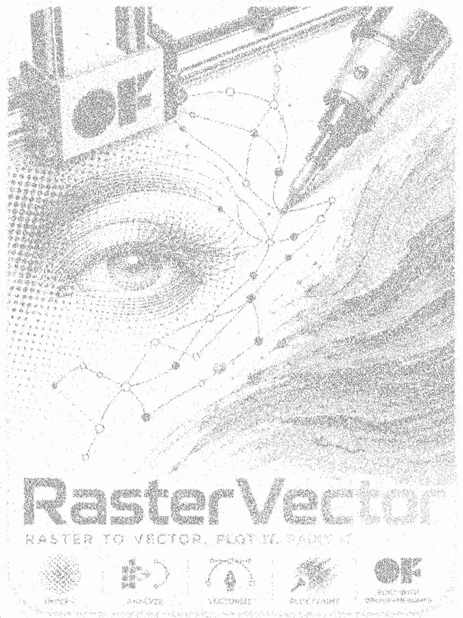
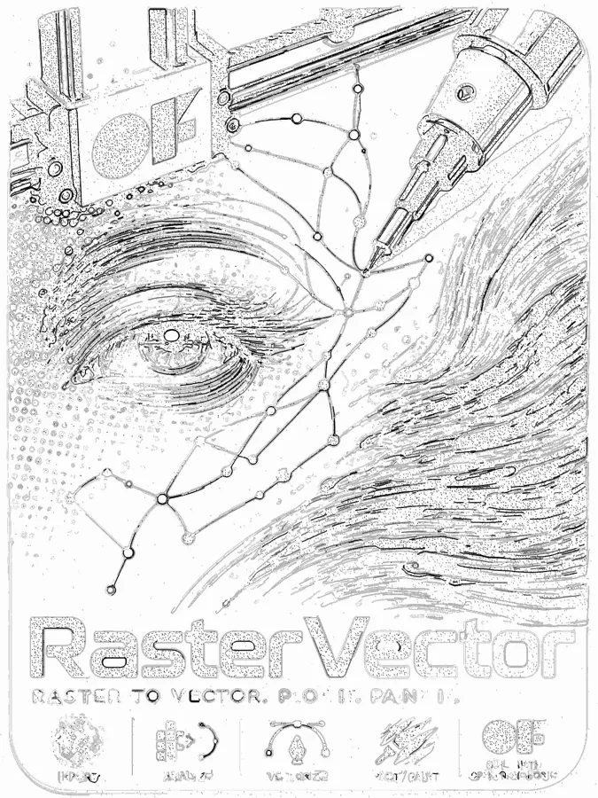
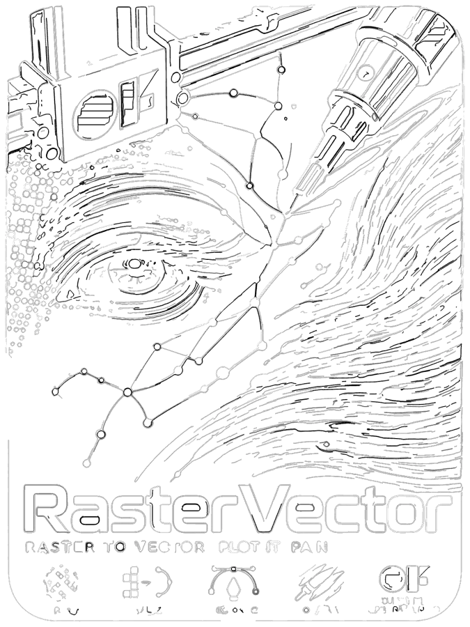
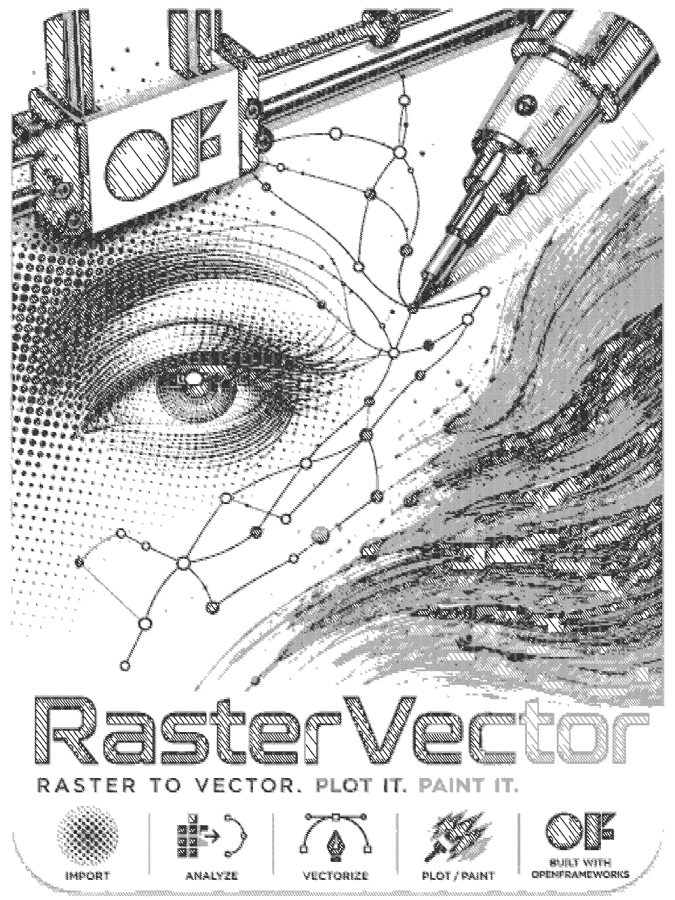
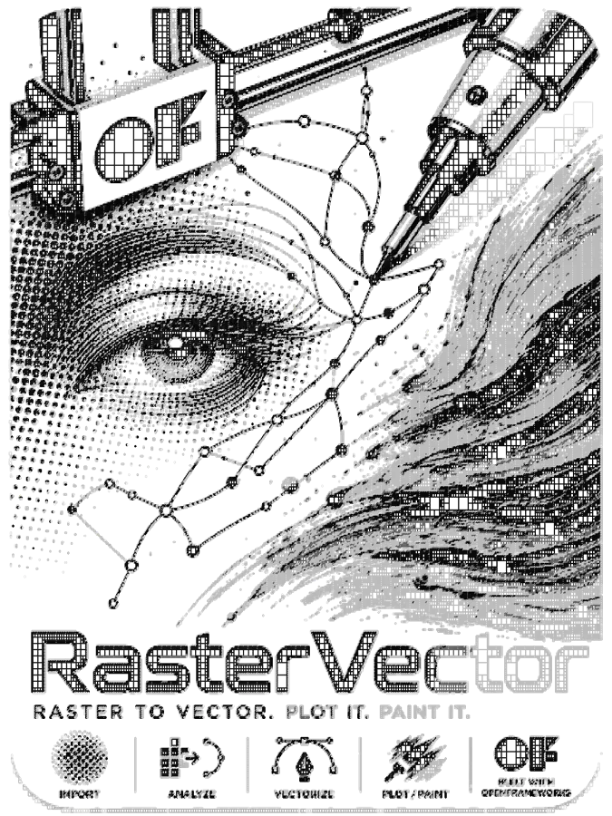
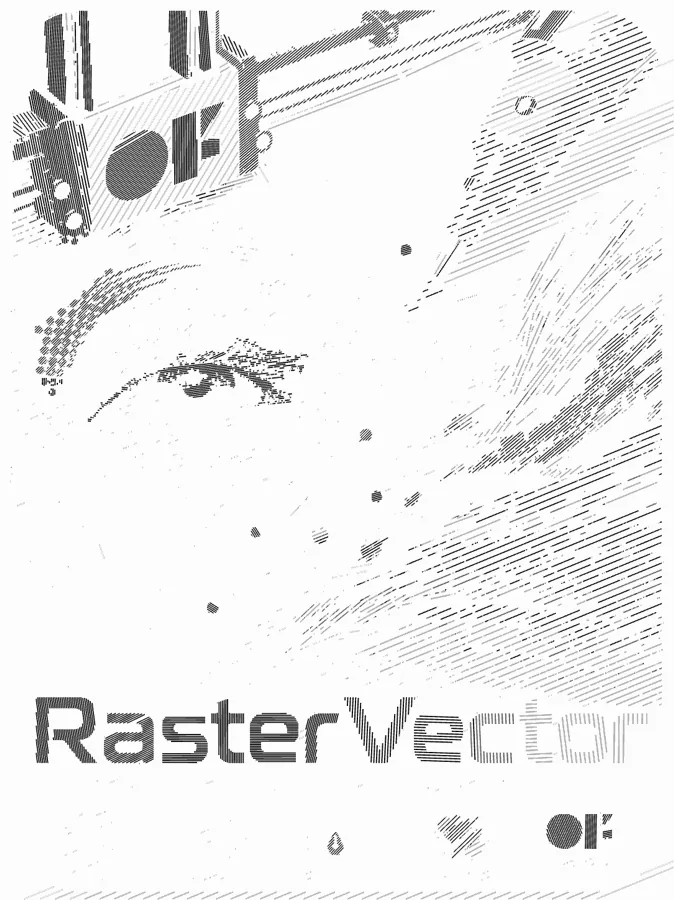
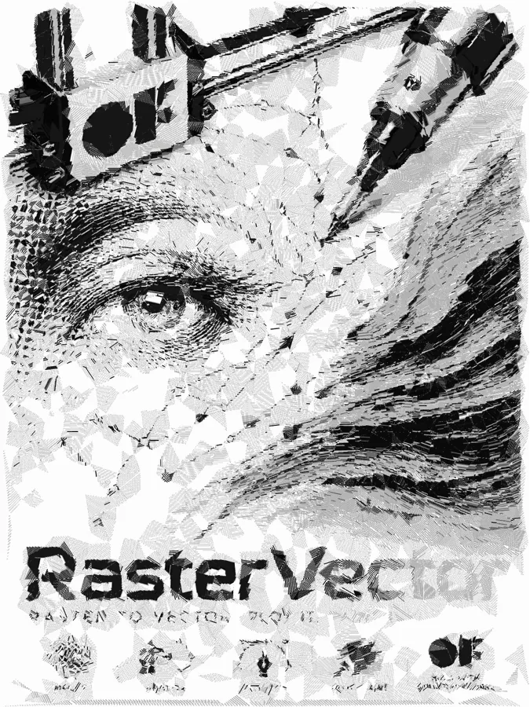
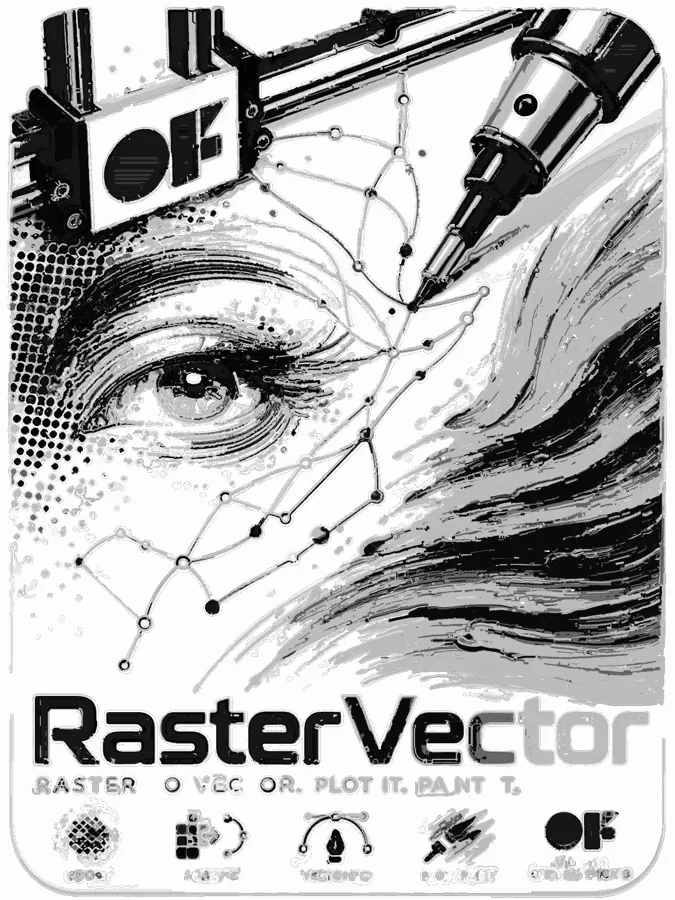
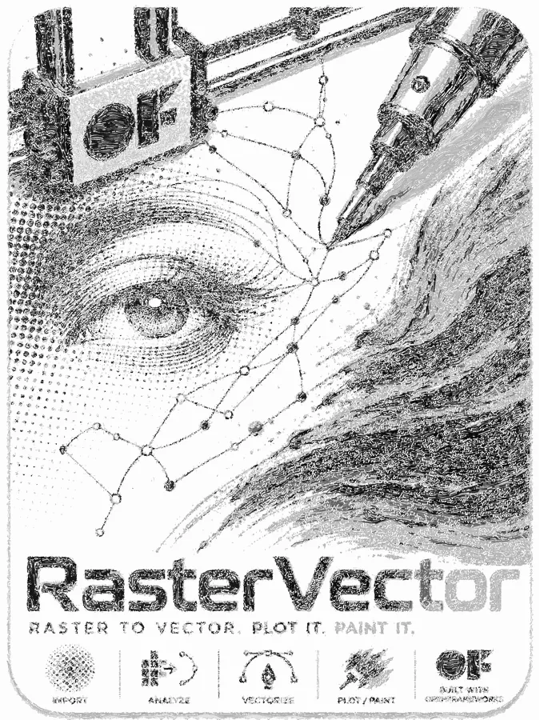
More examples — spiral, streamlines, the sketch, curvature lines, and triangulation types, plus Flow Grid — coming as they're generated.
Parameters by type
Which panel(s) you see depends on the active type. Several types share a panel — noted below — and four types are combos that use two panels together. Expand a type for its full parameter list.
0SpiralSpiral
| Ring spacing | Distance between successive turns (px) — smaller = denser |
| Centre X / Y | Spiral centre, 0–1 of image width/height |
| Amplitude | Waviness perpendicular to the spiral; 0 = straight |
| Min / max velocity | Speed range of the spiral's traversal — drives point spacing/darkness response |
1H linesH lines
| Line spacing | Vertical distance between scanlines (px) |
| Amplitude | Wobble height — increases with local darkness |
| Seg/px | Segments per pixel — higher = smoother |
2V linesV lines
| Line spacing | Horizontal distance between lines |
| Amplitude | Wobble width |
| Seg/px | Segments per pixel along the line |
3Sketch AlignedSketch
Repeatedly finds the darkest un-drawn area, tests candidate directions through it, and draws the best-scoring short line — brightening the image where it draws so later passes move on to what's still dark. A final pass nudges each stroke's endpoints so nearby strokes point the same direction, reading as a more continuous flow (a plotting-order aid, not a shape change). Also the "sketch" half of combos 5 and 8.
| Min / max line len | Stroke length range (px) |
| Line tests | Candidate directions tested per stroke start |
| Angle min / max | Allowed range of starting angles (°) |
| Delta angle | Angular step between tests |
| Erase luminance | How much a drawn line brightens the image, so the algorithm doesn't retrace it |
| Max lines | Stops generating once reached |
| Block size | Granularity for finding the next darkest area |
| Fill white wt | 0 = only target dark areas, 1 = only target under-drawn/light areas, blend between |
| Follow edge wt | Bias toward lines that track image edges |
| Orthogonal only | Restrict to horizontal/vertical strokes (boxy look) |
| Avoid overlap | Penalize lines through already-drawn pixels |
| Skip white above | Luminance cutoff to skip blank/background areas |
| K nearest / neighbor radius | Used only by the end-alignment pass unique to this type |
4StreamlinesStreamlines
Traces long curved lines parallel to image edges, seeded on a grid. Also the "flow" half of combos 5 and 7.
| Step size | Integration step along the flow |
| Max length | Longest a single line can run |
| Seed spacing | Grid spacing for seed points |
| Smooth radius / passes | Pre-smoothing of the flow field |
| Min magnitude | Stop tracing where flow is too weak |
| Proximity spacing | Skip a new line if it runs too close to an existing one |
| Simplify tol | Path simplification after tracing |
| Flow type | Direction field source: Sobel gradient or ETF |
| ETF sigma | ETF smoothing radius (when flow type = ETF) |
| Use FDoG + σ1 / σ2 / rho / thresh | Gate seeding by FDoG (flow-based difference-of-Gaussians) edge strength |
5Sketch+FlowSketch, Streamlines
Combo: runs Sketch first, then Streamlines on top, into the same drawing — short goal-seeking strokes overlaid with long flowing edge-tangent lines. Both panels' parameters apply.
6EdgeEdge
Traces contour lines along the image's edge field, gated by an edge-strength threshold. Also the "edge" half of combos 7, 8, and 11.
| Step size | Integration step along the flow (px) |
| Max length | Longest a contour can run |
| Smooth radius / passes | Smoothing of the edge flow field |
| Seed spacing | Grid spacing for seed points (px) |
| Edge threshold | Minimum gradient strength to seed a contour |
| Skip bg above / below | Luminance range treated as background and skipped |
| Min contour len | Drop contours shorter than this |
| Overlap skip | Skip a contour that overlaps already-drawn ones past this ratio |
| Max by importance / max to collect | Caps on total contour count |
| Bidirectional | Trace both directions from each seed and merge into one path |
| Min magnitude | Stop when flow magnitude drops below this |
| Proximity spacing | Skip a contour too close to an existing one |
| Min vertex dist | Minimum distance between consecutive vertices — reduces jitter |
| Simplify tol | Path simplification after tracing (0 = off, keeps smooth contours) |
| Outline offset / length / start | Adds a second offset path alongside a contour, covering a fraction of its length |
| Outline only | Draw only the offset path, not the original contour |
| Add outline paths / add inset paths | Toggles for whether offset/inset paths are ever added |
| Random main/outline | Randomly draw main-only or outline-only per contour |
| Inset offset | Adds a path offset inward |
| Seed order | Grid order vs. strongest edges first |
| Flow type / ETF sigma | Sobel or ETF edge tangent field, with smoothing |
| Use FDoG + σ1 / σ2 / rho / thresh | Gate seeding by FDoG edge strength |
7Outline+FillEdge, Streamlines
Combo: Edge contours first for clean outlines, then Streamlines for interior flow texture. Both panels' parameters apply.
8Sketch+EdgeSketch, Edge
9IsophotesIsophotes
| Num levels | Number of luminance bands |
| Level min / max | Brightness range the levels are spaced across |
| Simplify tol | Path simplification |
| Min contour len | Drop contours shorter than this |
| Min spacing | Skip a contour too close to an already-drawn one |
10StipplingStippling
Places dots whose density follows local darkness, colored from the source image. Also the "stippling" half of combo 11.
| Dot radius | Base dot size |
| Spacing | Candidate grid density |
| Density | Overall probability scale |
| Jitter | Randomize position within each grid cell |
| Radius variation | Larger dots in darker areas |
11Stippling+EdgeEdge, Stippling
12Sketch CurvesSketch Curves
A hybrid: uses Sketch's darkest-area seeking (find the darkest remaining block, erase as it draws), but traces long flowing curves instead of short strokes.
| Block size | Granularity for finding the next darkest area |
| Max curves | Stops generating once reached |
| Erase luminance | How much a drawn curve brightens the image |
| Fill white wt | Dark-area vs. under-drawn-area targeting balance |
| Step size / max length | Curve tracing step and length cap |
| Edge threshold | Minimum gradient strength to trace along |
| Bidirectional | Trace both directions from the seed |
| Min magnitude | Stop where flow is too weak |
| Min vertex dist / simplify tol | Jitter reduction and path simplification |
| Flow type / ETF sigma | Sobel or ETF direction field |
| Skip white above | Luminance cutoff for background |
13Sparse PatchSparse Patch (full)
Currently hidden from the type dropdown in the live app — only reachable via a saved project or preset that sets it directly. Builds an adaptive quadtree over the image (splitting where detail/variance is high) and draws each leaf as a filled or hatched rectangle. Has the same subdivision controls as Sparse Patch Diag/BD below, plus hatch fill (with spacing/angle following local gradient) as an alternative to flat rectangles, and an experimental "paper mode" boundary-tracing layout pipeline with its own advanced parameter set not covered here since it isn't currently reachable from the UI.
14–15Sparse Patch Diag / BDSparse Patch (simple)
Same adaptive quadtree split as type 13, but each leaf cell is drawn as a single corner-to-corner diagonal stroke instead of a filled rectangle. Type 15 (BD) is a separate, leaner reimplementation of the same idea — visually similar output via a simpler code path.
| Min patch size | Smallest a cell can be — cells below this never split further |
| Max depth | Caps total split count / rect count |
| Variance thresh | Split trigger — lower = more splits |
| Split on edges / edge threshold | Also split on strong local gradient, above this threshold |
| Skip white above | Don't emit cells brighter than this |
| Cull rects larger than | Drop rectangles above this size |
16Gradient HatchGradient Hatch
Fills regions with hatch lines whose spacing follows local brightness (dark = dense, light = sparse) and whose angle follows the region's local structure. Regions can come from contour-following flood-fill (default) or from one of several tile-shape modes. Reworked recently with more layout options and a "raster cell" mode.
| Min / max spacing | Hatch line spacing range |
| Angle offset | Rotates hatch angle away from the detected structure direction |
| Skip white above | Don't hatch regions brighter than this |
| Edge threshold | Region boundary sensitivity |
| Min area px | Drop regions smaller than this |
| Render scale | Upsample before processing for finer regions |
| Region tile size | 0 = contour-following mode; >0 switches to tile mode |
| Draw outlines | Outline each region/tile in addition to hatching it |
| Tile mode | Uniform grid, adaptive quadtree, "Mondrian" random splits, or jittered grid |
| Tile min / max size, variance, jitter, seed | Controls for whichever tile mode is active; seed makes the layout reproducible |
| Raster cell above / prob | Luminance threshold and random chance for a cell to show the source photo instead of hatch lines |
A set of "glitch" randomization controls (drop probability, color scramble, stutter/repeat, spacing collapse, row drift) exist in the underlying settings and are saved with presets, but aren't yet exposed as sliders in this panel.
17TriangulationTriangulation
Low-poly look: scatters seed points (uniform, with an edge-biased option), builds a Delaunay triangulation, and per-triangle draws the outline and/or a brightness-driven hatch fill.
| Num points | Seed point count |
| Edge sample bias | 0 = uniform sampling, 1 = points biased toward edges |
| Hatch min / max spacing | Fill line spacing range |
| Hatch angle | Base hatch angle |
| Hatch angle range | Extra angle variation added for brighter triangles |
| Draw edges / fill hatch | Toggle triangle outlines and/or hatch fill independently |
| Skip white above | Don't fill triangles brighter than this |
18Tri EdgeTriangulation
Same rendering as Triangulation, but seed points are sampled along detected image edges (plus a background uniform grid), so triangle boundaries tend to land on real contours.
| Grid points | Background uniform seed count |
| Edge points | Seed count sampled along detected edges |
| Edge threshold | Minimum gradient strength to seed along |
| Hatch min/max spacing, angle, angle range, draw edges, fill hatch, skip white above | Same as Triangulation |
19Curvature LinesCurvature Lines
Treats image luminance as a height field, computes its principal curvature directions, and traces bidirectional streamlines along them — producing lines that wrap around forms the way classical engraving or etching cross-hatch does.
| Step size / max length | Trace step and length cap |
| Seed spacing | Grid spacing for seed points |
| Hatch min / max spacing | Spacing between neighboring curvature lines |
| Blur sigma | Smooths the luminance field before computing curvature — higher = follows broader forms, less noise-driven |
| Cross hatch | Adds a second pass along the perpendicular curvature direction |
| Bidirectional | Trace both directions from each seed |
| Flat threshold | Skip areas where curvature is too weak/ambiguous to determine a direction |
| Simplify / proximity spacing / min vertex dist | Path cleanup and spacing controls |
| Skip white above | Luminance cutoff for background |
20CalligraphicCalligraphic
Traces flow-following spine paths, then emits the spine plus luminance-modulated parallel offset copies on each side — dark areas get several parallel strokes (a wide "nib"), light areas taper to one thin line or nothing.
| Step size / max length | Trace step and length cap |
| Seed spacing | Grid spacing for spine seed points |
| Side strokes | Number of parallel offset copies drawn on each side of the spine — 0 = spine only |
| Stroke spacing | Distance (px) between offset copies |
| Lum scale | 0 = uniform stroke width everywhere; 1 = width tapers fully to nothing in bright areas |
| Bidirectional | Trace both directions from each seed |
| Proximity spacing / min magnitude | Spacing and flow-strength cutoffs |
| Simplify / min vertex dist | Path cleanup |
| Skip white above | Luminance cutoff for background |
| Flow type / ETF sigma | Sobel or ETF direction field |
21Flow FillFlow Fill
The newest and most experimental type. Scans the image and seeds a new stroke at the first unclaimed foreground pixel, then grows it outward following the edge/flow field in both directions, claiming pixels as it goes — so every foreground pixel ends up in exactly one stroke, with no gaps or overlaps by construction (unlike Streamlines' fixed-grid seeding). A persistent noise field blends into the flow direction for a swoopy look even where photo edges are weak; stroke color is drawn from a coarse averaged-color grid so color reads as clean abstracted blocks.
| Flow type / ETF sigma | Sobel or ETF direction field |
| Smooth radius / passes | Flow field smoothing |
| Swoop amount / scale | Strength and spatial frequency of the extra noise-driven bend |
| Trace step | Integration step size |
| Stroke spacing (mm) | Real-world spacing, with an "× brush width" multiplier and a "Match to brush" button that syncs it to the toolbar brush width |
| Gap tolerance | How much unclaimed space is allowed before starting a new stroke |
| Max turn | Fraction of a full circle a stroke may curl before stopping |
| Max stroke length (mm) | Longest a single stroke can run |
| Abstraction / color grid size | Coarseness of the averaged-color grid strokes sample from |
| Contrast, saturation boost/add, brightness mult/cap | Color grading applied before abstraction |
| Skip above / below luminance | Background cutoffs |
| Scan right-to-left | Direction the seed scan runs |
| Transition softness | Fades the figure into the background over N luminance levels instead of a hard cutoff |
| Spacing jitter | Randomizes stroke packing so density reads less uniform |
| Pattern variation | Blends in a second noise octave so the swoop doesn't repeat predictably |
| Boundary destabilize | Breaks strokes away from tightly hugging strong edges so it reads as texture rather than outline |
22Flow GridFlow Grid
The same coarse color-grid abstraction as Flow Fill, but renders one square per grid cell filled with straight parallel hatch lines angled to the local flow direction, instead of tracing curved per-pixel strokes — far fewer, straighter strokes, cheaper to draw, still reads as following the photo's curvature.
| Flow type / ETF sigma | Sobel or ETF direction field |
| Smooth radius / passes | Flow field smoothing |
| Flow influence | How strongly each cell's hatch angle follows the flow field vs. a soft organic-noise angle |
| Abstraction / color grid cell size | Grid coarseness |
| Contrast, saturation boost/add, brightness mult/cap | Color grading before abstraction |
| Skip above / below luminance | Background cutoffs |
| Line spacing | Hatch density inside each cell |
| Draw cell outline | Outline each grid cell |
| Abstraction density | Probability a cell's fill is actually drawn — lower = more randomly skipped cells, "peppered" look |
| Edge follow | Biases which cells survive peppering to keep ones sitting on strong edges |
Post-process
Once a drawing exists, the post-process panel groups its cleanup tools into five sections.
Cleanup
- Fill shapes w/ lines — hatch-fills any closed shapes at a settable spacing.
- Scale to 22×30 paper — scales and centers the drawing to a true 22×30″ sheet at 25.4mm/in (canvas units become real millimeters — the same unit brush width and stroke spacing use elsewhere in the app), fit within a 25mm margin on every side, aspect ratio always preserved.
- Remove overlapping, spread lines apart (with a spread-offset slider), flatten crossings.
- Remove duplicates (distance tolerance), thin strokes (keep 1 out of every 2–5), remove short (minimum-length slider).
Smooth & simplify
- Simplify for brush (vertex/segment-distance thresholds), remove back-and-forth paths, split at sharp turns, keep-straight-only filter.
- Smooth paths (Douglas–Peucker simplify), straighten colored-only strokes.
Combine strokes
- Combine same-color segments (tolerance), merge into brush strokes (join distance, optional smooth-after-join).
- Add brush outlines — brush width, inset multiplier, max strokes to outline, min length to outline, min/max inset-length percentage.
Order & resample
- Subdivide strokes to equal spacing, apply a numbered stroke-order mode, reverse or re-orient directions.
Vector ops
- Re-draw from vector, merge patch regions.
Palette, Paint Recipes & export
Palette
Up to 8 editable color slots, each with an Use toggle (hide from view and every export) and an Img toggle — when checked, that color's region shows the actual source photo pixels instead of vector strokes, both live and in PNG/batch export. Colors can be extracted from the loaded image or a browsed file, or loaded from a built-in library: three quick "classic" presets (Crayola 8 Watercolor, Standard 8, Grayscale) plus a larger set of named paint palettes with a selectable size (8 / 12 / 16 / 24 / 32 / 84 colors) and a Match Image button that picks the most useful colors from a set for the currently loaded photo.
Paint Recipes
The Paint toolbar toggle opens a panel showing, for each active palette color, a real physical paint-mixing recipe: which base paints to combine and in what proportion, as a bar chart and gram amounts (assuming a 30g batch), with a match-quality readout — the same idea as the companion tool paintMixer, built directly into RasterVector's palette.
Export
| SVG | Also automatically writes a companion Bantam Tools JSON file alongside the .svg |
| GCode | For the Bot and other pen plotters |
| PNG | White background, antialiased — matches the vector output exactly, not the softened live preview |
| Batch | SVG + GCode + PNG + EPS in one pass, same base path — the only way to get an EPS |
Every export respects the current palette's Use/Img state — disabled or raster-mode colors are left out of the vector output.
Keyboard & UI
| H | Toggle GUI panels |
| D | Reset all params to defaults |
| 0 | Reset view (pan/zoom) |
| U | Undo (post-process) |
| K / L | Save / load preset (now includes palette + display settings) |
| P / O | Save / open project (image path + all algorithm params) |
| S / G / R | Export SVG / GCode / PNG |
| Drag / Scroll | Pan canvas / zoom |